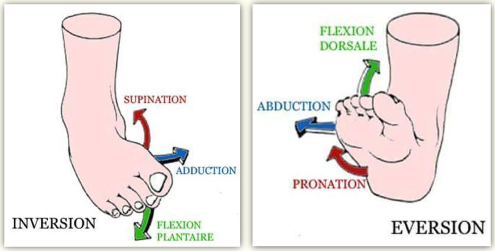
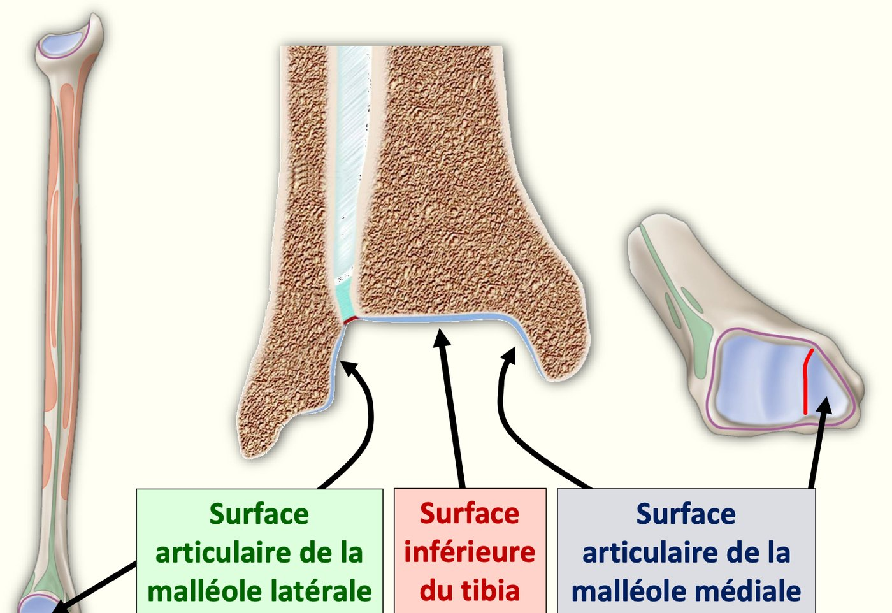
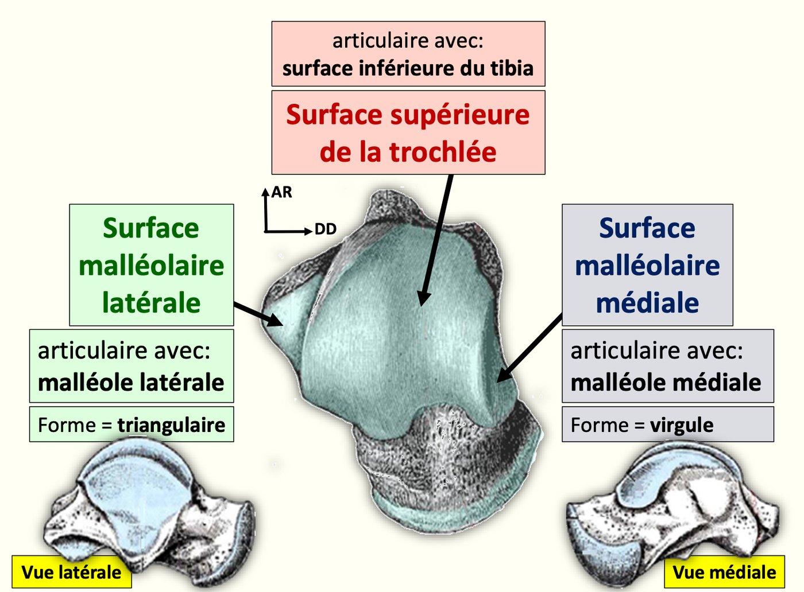
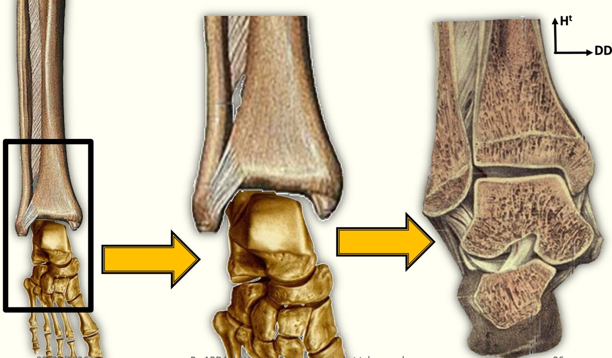
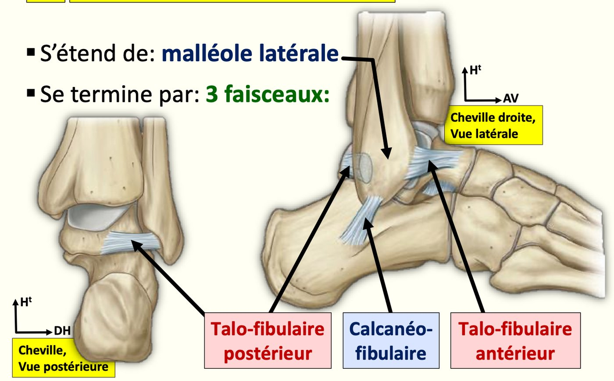

S1 · Anatomy · Summary
Foot joints and talocrural joint
If you remember only this
- 3 classes of foot joints: talocrural (ankle); tarsal (subtalar, transverse joint of the foot, distal tarsal bones together); forefoot (tarsometatarsal, intermetatarsal, metatarsophalangeal, interphalangeal).
- Talocrural joint = diarthrosis, ginglymus type; 2 leg bones ↔ talus; a recessed (mortise) joint that stabilizes the foot in walking and running.
- Leg side: 3 surfaces (inferior tibial surface, medial malleolus facet, lateral malleolus facet) forming the tibiofibular mortise.
- Talar trochlea: large projection with 3 surfaces — superior (↔ tibia), medial malleolar = comma-shaped, lateral malleolar = triangular.
- Medial (deltoid) ligament: strong, triangular, apex on the medial malleolus; 2 layers, 4 bundles. Lateral ligament: from the lateral malleolus, 3 bundles (anterior talofibular, calcaneofibular, posterior talofibular) = "the ankle sprain ligament".
- One degree of freedom (transverse axis): flexion (dorsiflexion) 20–30°, extension (plantar flexion) 30–60°.
Introduction — the joints of the foot p. 1 2025-26
| Class | Joints |
|---|---|
| a. Talocrural (ankle) | Diarthrosis, ginglymus; 2 leg bones ↔ talus; recessed joint ensuring foot stability in walking and running |
| b. Tarsal | Subtalar · transverse joint of the foot · distal tarsal bones with each other |
| c. Forefoot 🎯 | Tarsometatarsal · intermetatarsal · metatarsophalangeal · interphalangeal of the foot |
Together they allow flexion, extension, adduction, abduction, supination, pronation, inversion and eversion of the foot.

Tarsal, not forefoot
The transverse joint of the foot is a tarsal joint — it is not in the forefoot list.
1. Talocrural joint — articular surfaces p. 2 2023-24 · 2025-26
| Side | Surface | Partner / shape |
|---|---|---|
| Tibiofibular (leg) | Inferior articular surface of the tibia | ↔ superior surface of the trochlea |
| Facet of the medial malleolus | ↔ medial malleolar surface of the talus | |
| Facet of the lateral malleolus | ↔ lateral malleolar surface of the talus | |
| Trochlea of the talus 🎯 (large protruding surface) | Superior surface | ↔ inferior surface of the tibia |
| Medial malleolar surface | Comma-shaped; ↔ medial malleolus | |
| Lateral malleolar surface | Triangular; ↔ lateral malleolus |
The tibiofibular surfaces form a mortise into which the trochlea of the talus fits.



Memory trick
Medial = comma; the other side (lateral) is the triangle.
2–3. Means of union and synovium p. 2 2023-24 · 2024-25
Capsule: attaches to the periphery of the articular surfaces.
| Ligament | Description | Bundles (front → back) |
|---|---|---|
| Medial = deltoid ligament | Strong, triangular; apex on the medial malleolus; 2 layers | Superficial: tibionavicular, tibiocalcaneal Deep: anterior tibiotalar, posterior tibiotalar |
| Lateral ligament 🎯 | From the lateral malleolus; "the ankle sprain ligament" | 3 bundles: anterior talofibular, calcaneofibular, posterior talofibular |

Synovium: lines the inner face of the capsule; sends a cul-de-sac extension between the tibia and fibula.
4. Functional anatomy p. 2
Only one degree of freedom, around a transverse axis:
| Movement | Other names | Definition | Range |
|---|---|---|---|
| Flexion | Dorsiflexion, elevation (of the forefoot) | Dorsal face of the foot toward the front of the leg | 20–30° |
| Extension | Plantar flexion, lowering | Dorsal face away from the front of the leg | 30–60° |
Exam traps
False statements to recognise
- "The mortise's medial wall faces the lateral surface of the talus", "the superior wall is fibular" — false (the superior part is the tibia). 2023-24
- "The medial collateral ligament has two bundles, anterior and posterior" — false: 2 layers, 4 bundles. 2023-24
- The lateral ligament "is the strongest" or "ends on the talus and the navicular" — false: the deltoid is the one described as strong; the lateral one ends on talus and calcaneus. 2024-25
- "The transverse tarsal joint is a forefoot joint" — false. 2025-26
- The trochlea "has two articular surfaces", "articulates laterally by a comma-shaped surface" — false: 3 surfaces; lateral = triangular. 2025-26
Self-check
List the 3 classes of foot joints with their members.
Talocrural. Tarsal: subtalar, transverse joint of the foot, distal tarsal bones. Forefoot: tarsometatarsal, intermetatarsal, metatarsophalangeal,
interphalangeal.
Type and role of the talocrural joint?
Diarthrosis, ginglymus; recessed joint stabilizing the foot during walking and running.
Name the 3 leg-side surfaces and the 3 talar surfaces.
Leg: inferior tibial surface, medial malleolus facet, lateral malleolus facet. Talus: superior trochlear, medial malleolar (comma), lateral malleolar
(triangle).
What is the tibiofibular mortise?
The socket formed by the tibiofibular surfaces, into which the talar trochlea fits.
Describe the deltoid ligament.
Medial, strong, triangular, apex on the medial malleolus; superficial layer (tibionavicular, tibiocalcaneal), deep layer (anterior and posterior
tibiotalar).
Describe the lateral ligament and its clinical name.
From the lateral malleolus, 3 bundles: anterior talofibular, calcaneofibular, posterior talofibular; "the ankle sprain ligament".
Where does the synovium make a recess?
Between the tibia and fibula.
Ankle movements: degrees of freedom, axis, ranges.
One; transverse axis; flexion (dorsiflexion) 20–30°, extension (plantar flexion) 30–60°.